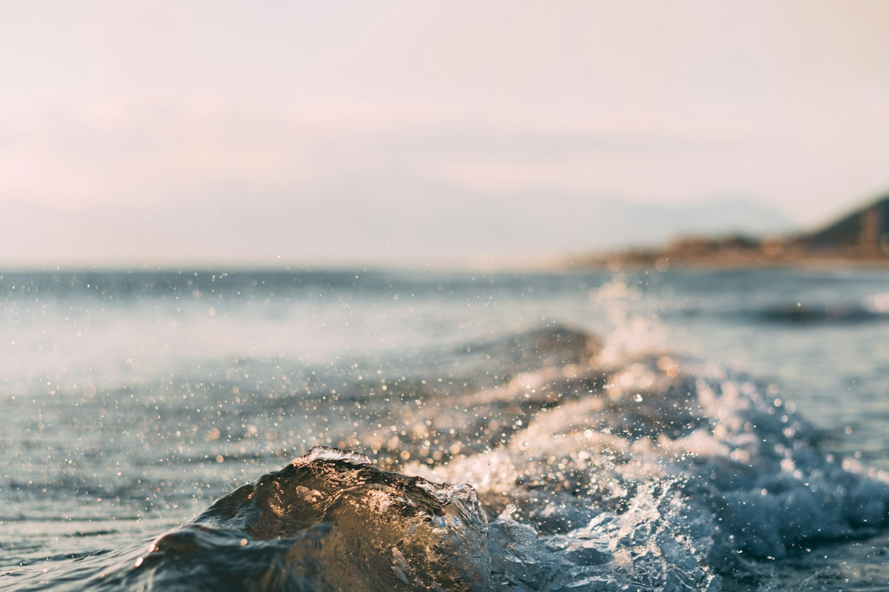

01 / Costa
Un día de playa
Caminar por la orilla, escuchar las olas y aprovechar la tarde sin andar con tanta prisa.
Consultar por este paseo ↗A veces no hace falta ir tan lejos. Una playa, un sendero o una montaña pueden ser suficientes para salir de la rutina y pasar un buen rato.
Encontrar mi próximo paseo ↗
Estos destinos son ilustrativos. Lo importante es elegir un lugar que se ajuste al tiempo que tenemos y a lo que nos gustaría hacer.
Caminar por la orilla, escuchar las olas y aprovechar la tarde sin andar con tanta prisa.
Consultar por este paseo ↗
Una opción para caminar con calma, disfrutar el aire fresco y observar lo que normalmente pasamos por alto.
Consultar por este paseo ↗
Para quienes disfrutan los paisajes abiertos y prefieren un paseo con un poco más de movimiento.
Consultar por este paseo ↗La ropa y el equipo cambian bastante según el lugar y las condiciones del día.
Agua, protección solar y calzado cómodo hacen la diferencia, incluso en un recorrido corto.
Recoger los residuos y respetar los senderos ayuda a que otras personas también puedan disfrutarlo.
Esta es una página de muestra para la exposición. Las tarjetas y fotografías sirven para demostrar cómo se adapta un sitio completo.
La portada, los destinos, los consejos y las consultas comparten el mismo contenedor. En pantallas pequeñas los elementos se colocan uno debajo del otro.